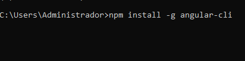
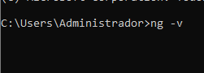
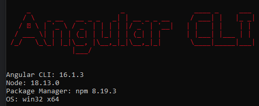
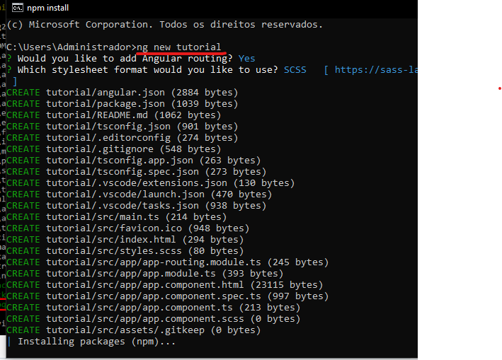
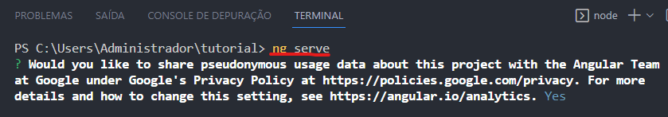
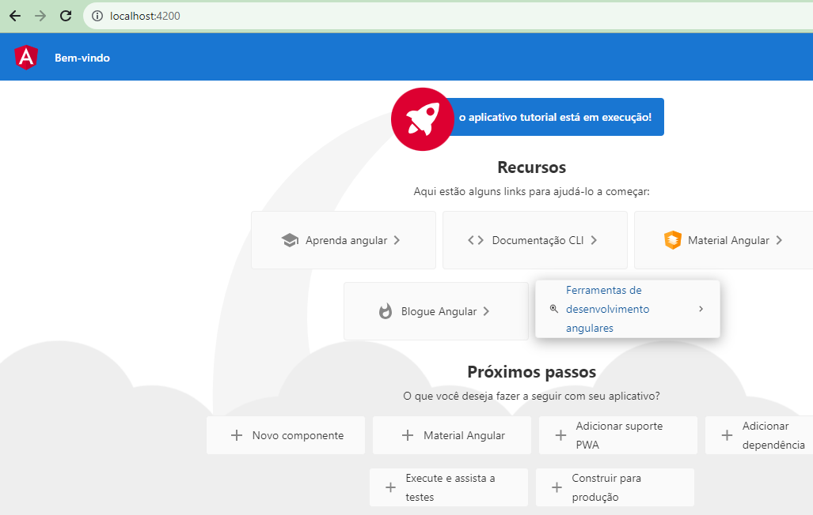

O Angular é um framework de javaScript de código aberto usado para construir aplicações para web baseados em uma
única página dinâmica.
E um framework mantido pela google para construção de SPA(single page aplication) ou seja aplicações de pagina
unica.
Uma SPA é basicamente uma aplicação construída em uma só página, na qual a interação e a navegação entre assessões
de uma página ocorrem de maneira a qual não é necessário recarregar a página em cada uma dessas mudanças.
Para se ter uma idea praticamente todas as aplicações mantidas hoje pelo google, ela ja são construida com base no
Angular como por exemplo
o google drive.
No seu propio cmd você pode digita o seguinte comando
Mas podemos conferi a versão apenas digitando o comando:
A saida do comando acima deve ser a seguinte :
 Dentre as amplas funcionalidade disponiveis do Angular podemos destacar a criação de um projetos
toda a estrutura inicial do projeto pode ser construída com um simples comando ng new Nome-do-seu-projeto

Para executar Para executar o novo basta utilizar alguma ide de sua preferecia no
exemplo a seguir foi utilizado o visual studio code e
e executar o cod com o comando ng serve assim como a imagem abaixo.

Quando a aplicação estiver rodando eles nos fornecera um caminho que e padrão para todos basta digita copia o caminho http://localhost:4200/ no seu navegador e essa sera a cara da aplicação ja rodando

E pronto agora basta criar a sua aplicação de acordo com os seus requesitos